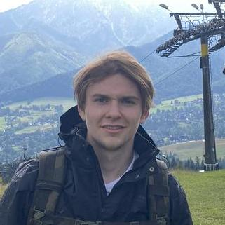

Jakub Borkowski
Inżynier Automatyki i Robotyki
Witaj! Jestem Kuba i aktualnie jestem w trakcie studiów magisterskich na Politechnice Poznańskiej. Kierunek, który studiuję to Automatyka i Robotyka. Poza uczelnią pracuję jako Automatyk, Robotyk, Elektryk w firmie Ster-projekt. Swój wolny czas staram się spędzać aktywnie. Kocham wspinaczki górskie i jestem klientem wielu poznańskich siłowni. Dodatkowo lubię poprogramować. Prawdopodobnie to sprawiło, że własnie to czytasz. Jeżeli chcesz dowiedzieć się czegoś więcej o mnie skorzystaj z odnośników poniżej.